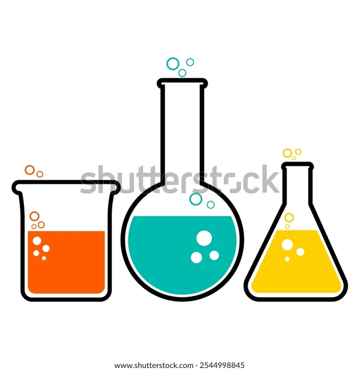

My Projects

Performance Evaluation of Arsenic Removal Plants
- Evaluated performance of arsenic removal plants across 4 districts.
- Conducted sampling, validation & R‑based meta‑analysis.
- Analyzed datasets from 52 plants and created statistical visualizations.
Netflix Data Analytics Using SQL
- Extracted India‑specific analytics using PostgreSQL.
- Normalized semi‑structured cast fields using SQL functions.
- Identified Top 10 actors in India‑produced titles.

Sales Data Analysis — Excel & Dashboarding
- Cleaned & transformed raw sales datasets.
- Created dashboards using PivotTables, Charts, and Slicers.
- Generated insights on performance KPIs and trends.